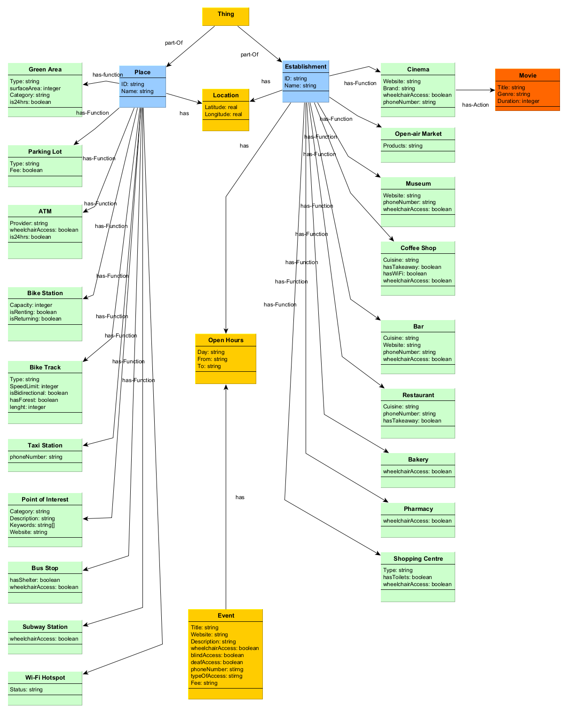

Introduction
Paris is a city offering so many opportunities for any kind of activity for hundreds of thousands of tourists visiting it every year. For many of them it can be difficult to move through the many streets of the city and find the most interesting places and things to do. They often rely on travel guides they can find on the internet, but those guides don’t always reflect the interests of the tourists. What if there was an app that collects all possible Paris activites and point of interest that could help tourists properly organize their days in the city? This DI Project will focus on the collection of the data necessary for the implementation of such an application.
Datasets
The datasets source considered is OpenData-Paris, a web portal offering rich and complete datasets collected by the city of Paris. Those data are open in a spirit of transparency and innovation, and to encourage the citizens to be active and co-designers of the city’s evolution. We will focus on the datasets that can be related to tourism and leisure activities.
- Pedestrian Areas : this is the list of all the pedestrian areas in Paris, associated with their geo_shape.
- Public Wi-Fi hotspots : when people travel, they may lack internet connection or have a very poor one. So, we consider it’s important to have the list of the Wi-Fi hotspots offered by the city.
- Open air markets : it’s the list of the outdoors market that are present in Paris. It contains information about the kind of products sold in the market, its position and its timetable.
- Unusual Walks and PoI : Paris is not only about the Tour Eiffel, Notre Dame and the popular places. There are so many other interesting places to discover and this dataset is a great source for Paris hidden gems.
- Green Area and Similar : it’s the list of open and green areas managed by the city of Paris. Many kinds of areas are available, such as: open walks, decorative gardens and road decorations.
- Public Bike Stations : Tourists may want to be move in a fast, green and affordable way so we will include the list of Paris bike stations. There are more than 1,400 bike stations available in Paris and its outskirts.
- Cycling Tracks : The list of cycling tracks in the city, associated with their geo_shape.
- Taxi Stations : The list of public taxi stations available in Paris, associated with their phone number and location.
- Interesting Activities : A list with thousands of events happening in Paris. Such as: festivals, conferences, workshops, guided tours and many more.
OpenData-Paris is offering us most of the data necessary for our DI project, yet there’s some information useful for the tourists that we weren’t able to find there. So we decided to retrieve this data from open-street maps. In order to extract data from open-street maps we used a tool called Overpass Turbo which allowed us to fetch the information we require. The data is stored as geojson format and not all the elements in the list have the same fields so particular attention is required when working with these datasets. Here’s the list of elements we’re going to retrieve:
- Shopping center : the list of malls and department stores useful for tourists who want to shop in Paris.
- Restaurants : list of restaurants in the city.
- Bus station : list of Paris bus stations.
- Subway station : list of Paris subway stations.
- Other points of interest : list of places that can be useful for some of the users: parking lot, bakeries, pharmacy.
Reference Schemas
Given the collected data and our objective we created an informal ER schema helping us how to organize the data. In the schema, we have two main objects (place and establishment) having many different functions. The first object is related to geographical areas without a specific timetable (people can always go there) while the second object is describing geographical areas where people can go only during certain days and hours. This division into two objects is useful both for better organizing our data and for potential tourists who want to plan their trips using the final result of our project. Another important element of our informal ER is the event EType, which represents the different events happening in the city of Paris. Here you can see a picture of the schema, please have a look to our report in case you're interested for more details.
ETG
In order to produce the ETG graph, we have to take into account our teleology and the following foundational realtions :
- hasFunction : relates objects to functions and illustrates the fact that objects can have one or more admissible functions
- hasFunctionAction : relates functions to actions and illustrates the fact that functions can be realized via one or more admissible functions
- hasObjectAction : relates objects to actions and illustrates the fact that objects can have one or more admissible functions
- ObjectToObjectRelation : models the diverse array of semantic relations existing between different objects
The ETG is pretty much following the ER model, fitted over the foundational teleology. So we used Protégé to populate the foundational teleology with our domain-specific concepts, by taking care of adding each one of them in the correct subcategory. The process took quite some time because we have many classes and data properties.
Final KG
The final KG is allowing us to properly navigate our data through SparQL queries. Here are some quantitative features of our KG:
- Number of Etypes : 24
- Number of object properties : 24
- Number of data properties : 91
In many ways, this project was challenging. We are happy that we managed to finish every
phase and come up with a working Knowledge Graph. We started with a big idea in mind but
we soon understood it was impossible in our time-frame to collect and integrate all the data we
wanted. But our results are still reusable and we made sure that they could be easily expanded.
During this project we encountered some very common issues, such as the impossibility to translate
certain concepts, and by facing them ourselves we understood a lot better why we need to create
methodologies such as iTelos to deal with Data Integration.
You can find more details about this DI project at this github repo.